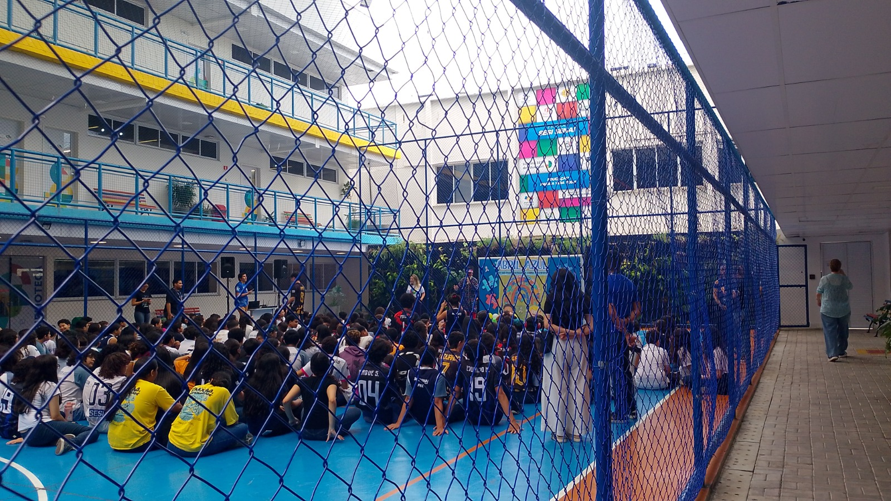
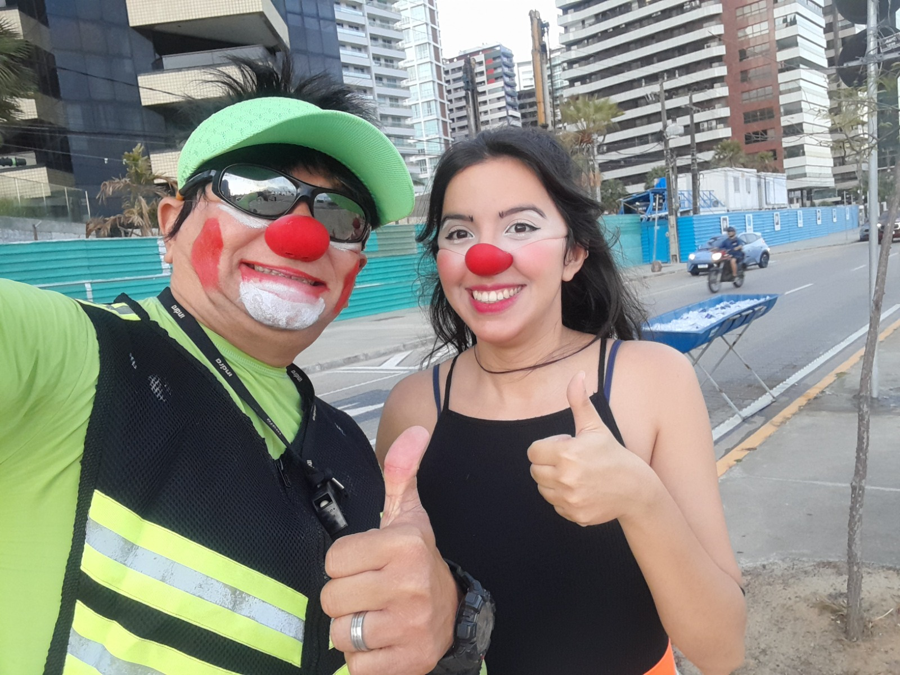
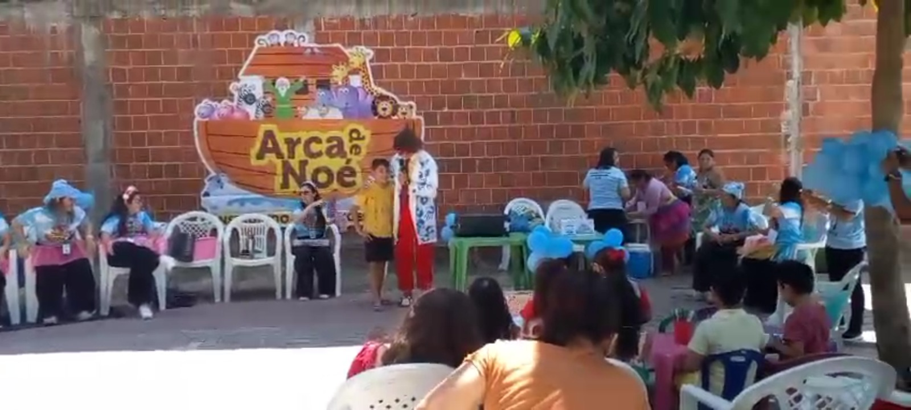

Serviços

Teatro e circo
Apresentações que unem a técnica do palhaço à sensibilidade do teatro. Histórias que encantam, emocionam e garantem boas risadas para todas as idades.

Empresas e escolas
O humor como ferramenta de transformação. Conteúdo educativo e motivacional sobre humanidade e segurança, adaptado para o público adulto ou infantil.

Energia no Esporte
Interatividade e alta energia para animar torcidas, motivar atletas e transformar competições esportivas em momentos inesquecíveis de celebração.

Eventos infantis
Brincadeiras criativas e momentos mágicos. Uma experiência lúdica pensada para transformar festas e eventos em memórias felizes para os pequenos.